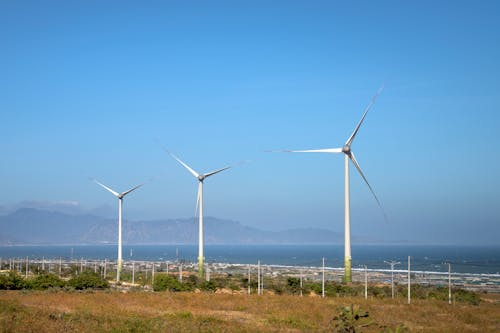

Desafios
Muitas áreas rurais enfrentam dificuldades com infraestrutura básica. Estradas de qualidade inferior, falta de eletricidade e acesso limitado à água potável dificultam o desenvolvimento econômico e a qualidade de vida no campo. Nas áreas urbanas, o trânsito congestionado e a poluição do ar são desafios constantes. O aumento da frota de veículos e a concentração populacional nas cidades contribuem para esses problemas. O campo oferece uma vida mais tranquila, com contato direto com a natureza e comunidades próximas. Em contraste, a cidade é dinâmica, diversificada e muitas vezes estressante.
Soluções
Reconhecer a interdependência entre campo e cidade é crucial. O campo produz alimentos essenciais para as cidades, enquanto estas fornecem mercado consumidor, tecnologias e serviços que sustentam a produção agrícola. Investir em parcerias e cooperação entre esses dois ambientes é fundamental. Desenvolver projetos agrícolas sustentáveis pode ser uma solução importante. Isso inclui técnicas de cultivo que preservam o solo, reduzem a pegada de carbono e promovem a biodiversidade. Além disso, incentivar o uso de energias renováveis no campo e na cidade contribui para a sustentabilidade global.Nas cidades, o planejamento urbano deve considerar o crescimento populacional, a mobilidade, o acesso a serviços básicos e a preservação ambiental. Nas áreas rurais, investir em infraestrutura (como estradas, escolas e hospitais) é essencial para melhorar a qualidade de vida e atrair investimentos.
